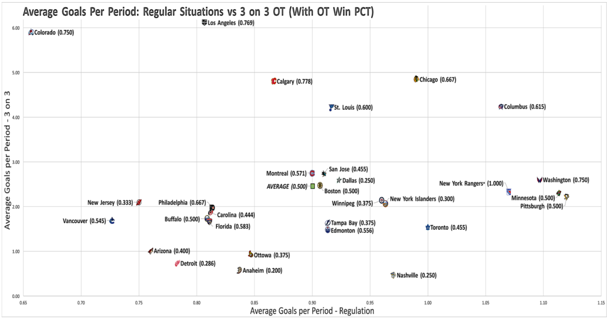
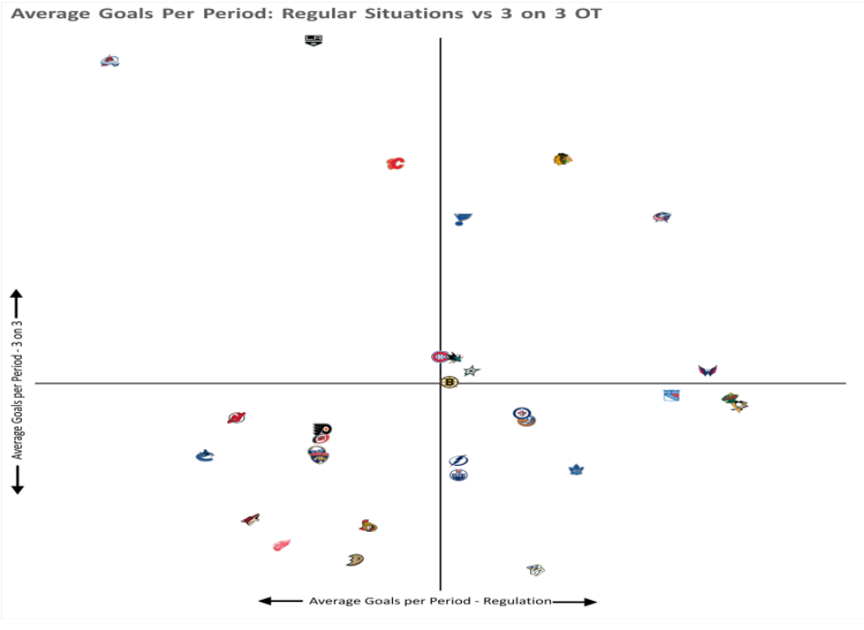
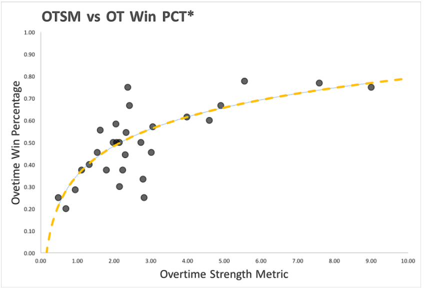

The Winners and Losers from NHL's 3v3 Overtime System
By Eric Herrmann | March 26, 2017

This current NHL season has marked just the second year of the league’s drastic new approach to reducing the number of games decided by shootouts. Since the start of the 2015 season, when a game goes to overtime in the NHL, the total number of skaters on the ice is cut down by four and the two teams play five minutes of 3-on-3 sudden death.
The aim of the rule change was to cut down on boring, unfair and unpopular shootouts and increase the amount of overtime scoring to make that part of the game more fast paced and exciting. Halfway through the second season of its implementation, the question remains, has it achieved these aims or not?
The answer? Pretty much a resounding “Yes.” According to statistics from Puckanalytics.com, in three versus three situations this season, the average NHL team is able to score over 279% more goals per that period, meaning that in overtime, the rate of scoring more than doubles. And this is despite the fact that the average NHL goalie is saving nearly of 91% of all shot attempts.
Like with any other rule change, the implementation of 3-on-3 overtime has forced coaches and players to react. Because of how challenging it is to play defense with only three skaters, coaches have gotten more and more conservative during overtime over the past two years. It doesn’t help much that the rule change basically discourages over aggression: if a team pulls their goaltender for an extra attacker during the overtime period, they’ll lose the point earned for the tie at the end of regulation if the opposing team scores into an empty net.
But even after just under two years with this rule change in effect, many teams clearly still haven’t figured it out. As with anything in the league some teams are better than others. So how is your team doing? The chart below maps each team’s regulation goals per period to their 3-on-3 overtime goals per period.
The New York Rangers have played in a league-low four overtime games to this point in the season.
I think this gives a pretty good feel for how well each team plays in overtime versus in regulation. What’s very clear is that some teams are very clearly better than others at scoring in overtime.
For example, let’s take a look at the Colorado Avalanche and the Los Angeles Kings. Neither of those teams seem to be fantastic at generating goals in regulation. Both teams are bottom ten in the NHL in terms of regulation goals per period, but somehow they manage to unleash nearly 5.91 and 6.12 goals per period in overtime respectively. Next, let’s compare that to the Pittsburgh Penguins. NHL’s leading goal scorers fail to score over the league average in overtime goals per period. As a result, the Pens just break even in games where they go to overtime. Overall, when a game goes to overtime or beyond for the Pens, their chance of winning it decreases by just over 23%. That’s likely not the biggest concern for the 5th ranked team in the league, but it certainly should be a thought in the back of Mike Sullivan’s mind when he looks up at the scoreboard and sees that the game is tied with two minutes to go in the third.
In the end, most of the league more or less behaves as expected. Bad teams also play badly in overtime. On the flip side, good teams generally manage to play at least somewhat competently in overtime, which leads to more overtime victories.
I’d hate to single out a team, but Detroit is far and away the clearest example of this. Detroit wins only 29% of their OT games partly because they only manage to score 0.73 goals per overtime period. Their regulation results aren’t much better; the Atlantic Division’s last place Red Wings have only won 25 games all season on 0.78 goals per regulation period. It makes sense that one of NHL’s worst teams should also be one of the worst 3-on-3 teams in the league.
And while we’re handing out superlatives, I’d like to give my “Most Average Team in the League” award to Boston. The Bruins have managed a perfect 0.500 record in overtime by managing to score nearly exactly the league average in goals per overtime period. That’s about as mediocre as it gets.
Ranking teams based off of goals per period is certainly interesting, but what does this all mean in terms of the only statistic that matters? How does this equate into wins and losses? Simply comparing each team’s Overtime Strength Metrics (OTSM = Goals Per OT Period / Goals Per Regulation Period) to their overtime win percentage gives a pretty good insight into how important playing aggressively in overtime is.
Based off of this graph, it’s fairly obvious that OTSM by itself isn’t the most perfect of metrics. But putting quality of defense and goaltending aside, it’s abundantly clear that simply scoring goals in overtime in high volumes has a huge impact on which team walks away with the victory. Alright, so that might just be the most obvious statement of the year in sports journalism. But the key takeaway here is that maybe the trend of going super conservative in overtime could be costing some teams wins and seems to be taking the game in the wrong direction. The thing that sets overtime winners apart from overtime losers is their ability to shift into that extra gear for the final deciding period. In the end, some teams who were able to score prolifically in regulation often seemed to run out of energy in overtime and ended up falling flat on their way to defeat. The teams who managed to dial up their scoring abilities and their aggression in overtime more often than not were able to go the distance and earn the two points.
Edited by Derek Topper